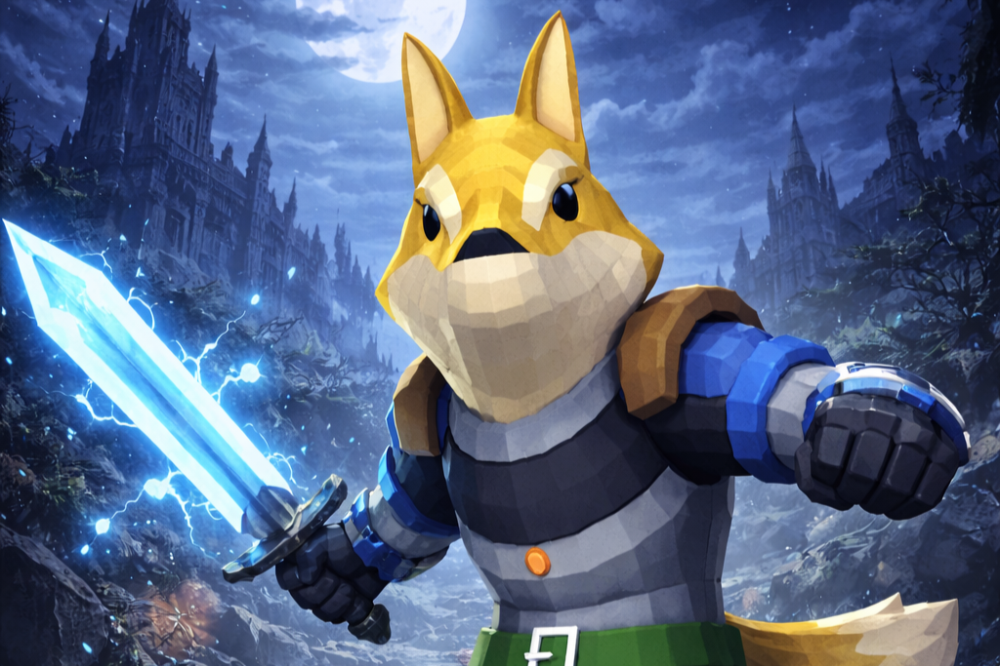
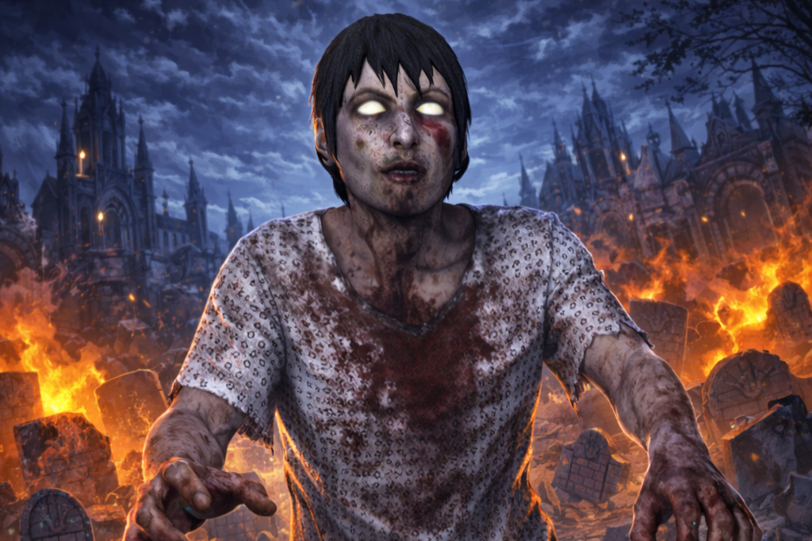
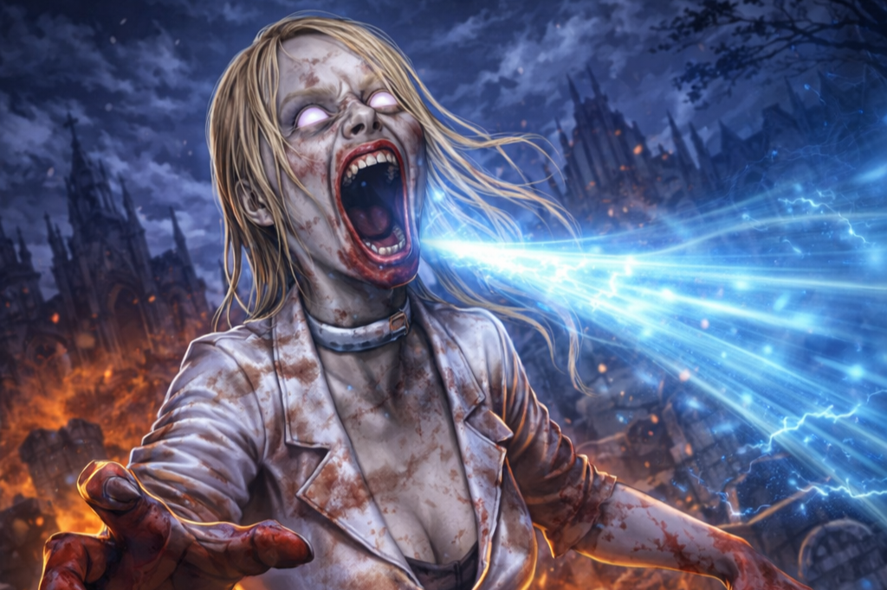
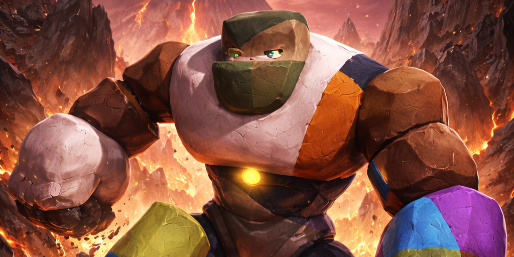
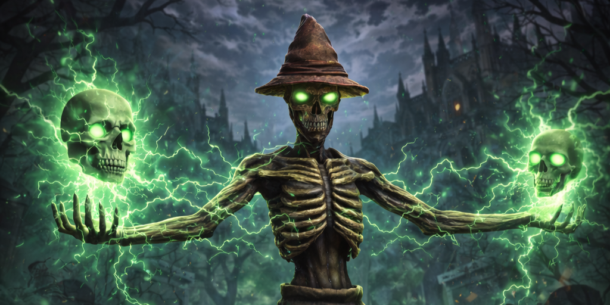
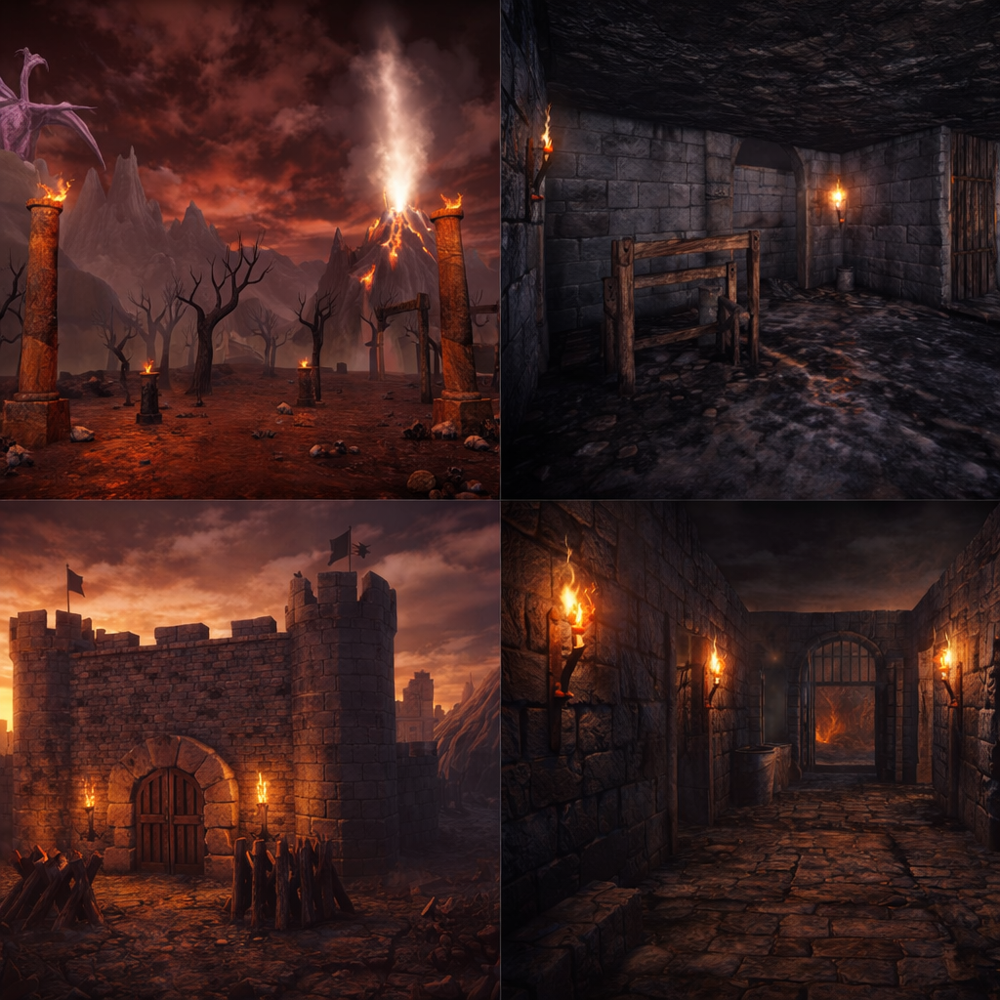
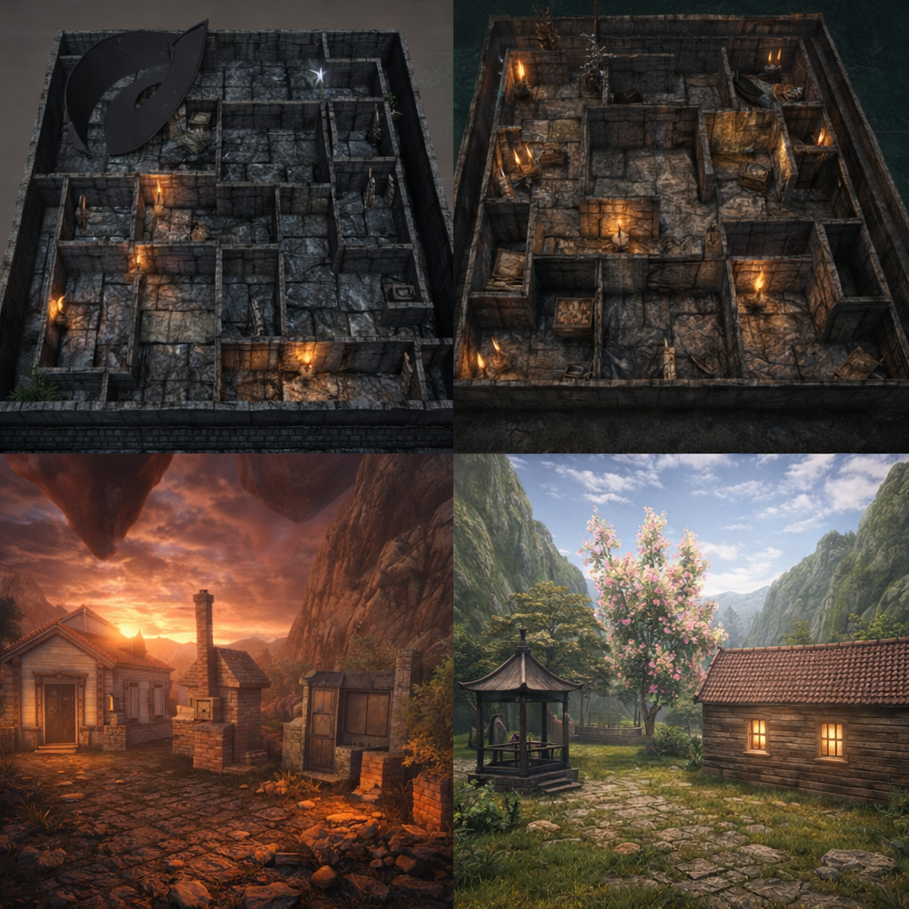

肆、成果展示
🧟♂️ 成果展示｜怪物圖鑑

嵐牙（Lan-Fang）
蒼鋼守衛

腐行者（The Decayed Walker）
失序感染體

哀嚎者（The Screamer）
狂化感染體

拼接巨人（Stonebound Golem）
拼裝守衛 Boss

枯瘦稻草人（The Withered Herald）
禁咒看守者 Boss
🎭 角色設定與命名說明
🦊 狐狸戰士（低多邊形）
正式名稱：
嵐牙（Lan-Fang）
稱號：蒼鋼守衛
近戰・機動型
「嵐」象徵速度與風的機動性，
「牙」代表近戰與野性。
👉 適合作為玩家角色或初始正義方角色，強調靈活移動與近距離攻擊。
🧟 男性殭屍（破舊病服）
正式名稱：
腐行者（The Decayed Walker）
稱號：失序感染體
追蹤・耐打型
「腐」象徵腐敗與感染源，
「行者」代表持續逼近的壓迫感。
👉 適合作為一般敵人，透過數量與追逐造成心理壓迫。
🧟♀️ 女性殭屍（尖叫型）
正式名稱：
哀嚎者（The Screamer）
稱號：狂化感染體
高速・恐懼型
「哀嚎」具高辨識度與恐怖氣氛，
透過尖叫聲與快速移動製造驚嚇。
👉 適合進階關卡或特殊事件怪。
🧞 巨石怪
正式名稱：
碎嶺巨偶（Stonebound Golem）
稱號：拼裝守衛
力量型
碎嶺：像山岳碎塊拼起來，力量型象徵
巨偶：非生命體、被創造或控制的存在
👉 適合「地城守衛 / 場景重點怪物」
🌾 稻草人怪
正式名稱：
枯禱人（The Withered Herald）
稱號：禁咒看守者
近戰・機動型
枯：死亡、乾涸、詛咒
禱人：曾經是祭司／信徒，現在只剩殼
👉 適合「恐怖區域 / 特殊事件怪 / 夜晚出現」
🗺️ 地圖場景展示


← 回首頁